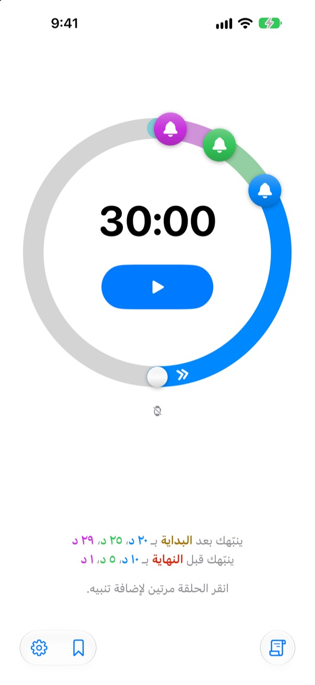
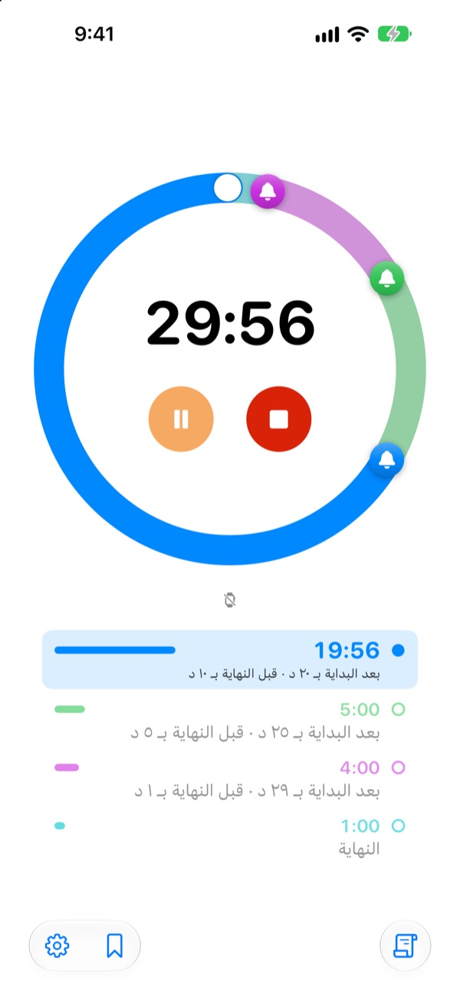
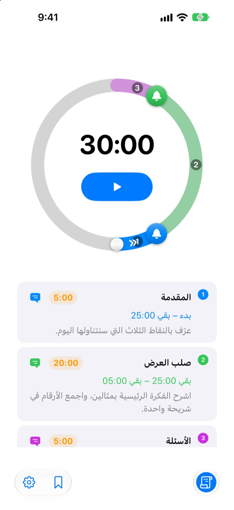
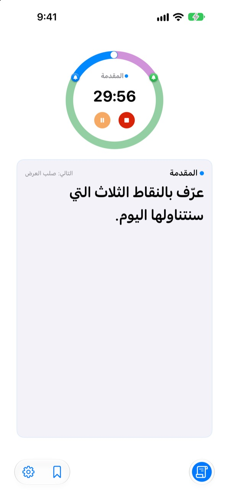

اعرف قبل
أن ينتهي الوقت
قبل نهاية عرضك بخمس دقائق، وقبل نهاية الاجتماع بثلاث. ينبّهك Rereminder في كل لحظة تحددها، فلا تحتاج إلى النظر إلى الساعة مرة بعد مرة.
التنبيهات المسبقة مجانية وبلا حدود. على iPhone وApple Watch وMac.

جرّبه هنا مباشرة
اختر المدة والتنبيهات، ثم اضغط الزر الأحمر. تمرّ الدقيقة في ثانية، وتسمع كل تنبيه في موعده.
هل سمعت المؤقت بعد فوات الأوان؟
المؤقت العادي لا يرنّ إلا عند الصفر. ينتهي عرضك قبل أن تصل إلى الخلاصة، وتنتهي الحصة قبل المراجعة، ويمتد الاجتماع إلى الذي يليه دون أي قرار. ما تحتاجه ليس صوتًا يقول إن الوقت انتهى، بل تنبيهًا يصلك وما زال لديك وقت لتختم.
تنبيهات قبل النهاية، بالعدد الذي تريده
اسحب الأجراس إلى القرص قبل النهاية بـ 10 دقائق أو 5 أو دقيقة واحدة، أو في أي موضع آخر. لا حدّ لعددها، ويمكن أن يحمل كل تنبيه رسالته الخاصة، مثل «اختم الشرائح».
والشاشة مطفأة، يبقى الوقت المتبقي ظاهرًا على شاشة القفل وفي Dynamic Island، وتنبّهك Apple Watch بنقرة على معصمك.

قسّم عرضك إلى أجزاء
مقدمة 5 دقائق، ثم العرض الرئيسي 20، ثم الأسئلة 5. أعطِ كل جزء اسمًا وملاحظات. ومع كل انتقال إلى جزء جديد يصلك تنبيه باسمه، فيبقى توقيتك مضبوطًا دون أن تفكّر فيه. (Pro)

جملتك التالية أمامك على الشاشة
أثناء التشغيل تظهر ملاحظات الجزء الحالي وما يليه بخط كبير. وإن تجاوزت الصفر يستمر العدّ، فتعرف بالضبط كم تأخرت. (Pro)

ثلاث خطوات للبدء
- 1
حدّد الوقت
أدر القرص، أو اضغط على الوقت واكتبه. الدورة الواحدة 60 دقيقة، والدورتان 120.
- 2
ضع تنبيهاتك
اضغط زرًّا مثل 1:00 أو 5:00 في الأعلى، أو اسحب جرسًا إلى القرص.
- 3
ابدأ وانسَ الأمر
اقفل هاتفك. سينبّهك iPhone وApple Watch في كل لحظة حددتها.
الإعدادات الأكثر استخدامًا
- عرض مدته 20 دقيقة
- قبل 5 دقائق «انتقل إلى الخلاصة»، وقبل دقيقة «اشكر الحضور»
- حصة مدتها 50 دقيقة
- قبل 10 دقائق «اشرح الواجب»، وقبل 3 دقائق «راجع الدرس»
- اجتماع مدته 30 دقيقة
- قبل 5 دقائق «أكّد القرارات»
- حصة بيلاتس أو يوغا
- وضع الجلسة، جزء لكل سلسلة تمارين (Pro)
- مذاكرة لمدة 25 دقيقة
- قبل 5 دقائق، ثم خذ استراحة
- راحة 3 دقائق بين المجموعات
- قبل 30 ثانية «استعد»
- جلسة إرشاد مدتها ساعة
- قبل 15 دقيقة وقبل 5 دقائق
احفظ الإعدادات التي تكررها كقوالب وابدأها بضغطة واحدة. ويمكنك أيضًا بدء المؤقت أو إيقافه عبر تطبيق الاختصارات وSiri.
كل شيء مفتوح في البداية. وادفع فقط إن أردت المزيد.
مجاني
- كل الميزات مفتوحة حتى 14 يوم استخدام أو 5 جلسات
- مجانًا دائمًا: آخر إعداد استخدمته، والقوالب المحفوظة، وحتى 3 قوالب جديدة، والوقت الإضافي
- تنبيهات مسبقة بلا حدود
- رسالتك الخاصة في كل تنبيه
- النشاط المباشر على شاشة القفل وفي Dynamic Island
- «استمر في التنبيه حتى أستجيب» و«الرنين كمنبّه عند الانتهاء»
- تطبيق Apple Watch وتطبيق Mac في شريط القوائم
- كل ألوان السمة
الذاكرة · Pro
- الذاكرة: قوالب بلا حدود وسجلّك الكامل
- Pro: كل ما في «الذاكرة»، بالإضافة إلى وضع الجلسة بأسماء الأجزاء وملاحظاتها
اختر لأيٍّ من الخطتين اشتراكًا سنويًا أو شراءً لمرة واحدة مدى الحياة. ويبقى لوضع الجلسة بضع محاولات بعد الفترة المجانية.
بلا إعلانات. وForever Pass واحد يفتح أيضًا كل تطبيقات Leeo.
أسئلة
لم يصلني تنبيه.
السبب في الغالب الأذونات أو التركيز. تحقّق من إذن الإشعارات في التطبيق من الإعدادات › إعدادات الإشعارات › طريقة التنبيه. وإن كنت تستخدم التركيز، فأضف Rereminder إلى التطبيقات المسموح بها في إعدادات iOS › التركيز. في الوضع الصامت يصلك الاهتزاز فقط. وإن كان Rereminder ضمن الإعدادات › الإشعارات › الملخص المجدول، فستتأخر تنبيهاته، لذا أخرجه منه.
هل سأنتبه للنهاية في الوضع الصامت؟
نعم. فعّل «الرنين كمنبّه عند الانتهاء» فيرنّ بصوت عالٍ حتى في الوضع الصامت أو التركيز. وفعّل «استمر في التنبيه حتى أستجيب» فيتكرر التنبيه حتى تضغط «إيقاف» أو «غفوة» في الإشعار.
ساعة Apple Watch لا تتزامن.
افتح الإعدادات › أجهزتي في التطبيق، وسترى الخطوة الناقصة. يجب أن تكون الساعة مقترنة بهذا الـ iPhone، وأن يكون Rereminder مثبّتًا على الساعة، وأن تفتحه على الساعة مرة واحدة بعد التثبيت. بعد ذلك ينتقل المؤقت إليها حتى لو كان تطبيق الساعة مغلقًا.
يظهر Mac غير متصل.
«متصل» تعني أن التطبيق كان مفتوحًا على ذلك الـ Mac خلال آخر 10 دقائق، لذا يظهر Mac الذي استيقظ للتو بعد بضع دقائق. يحتاج الجهازان إلى حساب iCloud نفسه مع تفعيل iCloud Drive. ويتطلب تطبيق Mac نظام macOS 26 أو أحدث.
دفعت لكن لم يُفتح شيء.
اضغط «استعادة المشتريات» في شاشة الخطط وأنت مسجّل الدخول بحساب Apple نفسه الذي دفعت به. مشتريات مدى الحياة تعود حتى بعد حذف التطبيق أو تغيير الجهاز.
هل ستُقفل قوالبي المحفوظة؟
لا. القوالب المحفوظة لا تُحذف أبدًا وتبقى مفتوحة دائمًا. بعد الفترة المجانية يمكنك حفظ حتى 3 قوالب جديدة مجانًا، وخطة «الذاكرة» تلغي هذا الحد.
كيف أسترد المبلغ؟
تتولى Apple عمليات الاسترداد. اطلبه من reportaproblem.apple.com بحساب Apple الذي دفعت به. وإن كان هناك خلل، فأخبرني به أيضًا حتى لا يواجهه غيرك.
هل يمكنني تجربته دون تثبيت؟
افتح m1zz.github.io/rereminder على iPhone، فيعمل المؤقت فورًا كمقطع تطبيق (App Clip). القرص والتنبيهات كلها موجودة، أما القوالب ووضع الجلسة وتطبيق الساعة ففي التطبيق الكامل.
على أي أجهزة يعمل؟
على iPhone بنظام iOS 26 أو أحدث، وApple Watch بنظام watchOS 11.6 أو أحدث، وMac بنظام macOS 26 أو أحدث. iPad غير مدعوم حاليًا. ويتوفر التطبيق بـ 25 لغة.
أين تُحفَظ بياناتي؟
المؤقتات والقوالب وأسماء الأجزاء والملاحظات والسجل كلها تبقى على جهازك، وتُحذف عند حذف التطبيق. لا يرسل التطبيق إلا إحصاءات استخدام مجهولة الهوية تساعد على إصلاحه، وسياسة الخصوصية تبيّنها بالتفصيل.
لديك سؤال أو ملاحظة؟ راسلني على leeo@kakao.com. أردّ عادةً خلال يومين إلى ثلاثة أيام.